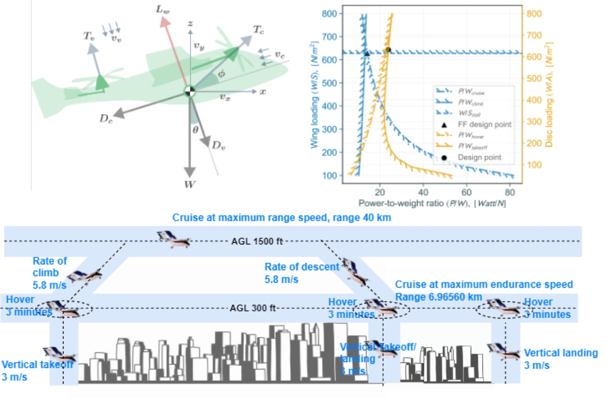

Dr. Zin Win ThuResearch Professor · Konkuk University
How can we give engineers more freedom to create—and more confidence in the designs they choose?
That question connects my work in generative modeling, scientific machine learning, and numerical optimization. At Konkuk University in Seoul, I develop computational methods for aircraft with complex geometry, coupled physical systems, and uncertain operating conditions.
My research spans learned design spaces, probabilistic performance prediction, and electric and hybrid-electric aircraft sizing. I also study vehicle routing and dynamic scheduling for urban air mobility.
Developing AI methods for uncertainty-aware 3D aircraft design optimization, leading the CADE development team, and supervising graduate research and publications.
Leading the Comprehensive Aircraft Design Environment: bringing analysis modules, design workflows, optimization, and visualization into a unified framework for conceptual and preliminary aircraft design.
Research in multidisciplinary aircraft design, electric and hybrid-electric aircraft sizing, and generative AI. Contributed to UAV, urban and regional air mobility, and digital twin projects.
Myanmar Aerospace Engineering University · Meiktila, Myanmar
Investigated multidisciplinary design analysis of fixed-wing aircraft, building early experience in conceptual design and contributing to journal and conference publications.
Three connected directions. One goal: better-informed aerospace design.
01
Generative geometry and latent design spaces
Learning compact representations of airfoil and wing geometry to reduce the dimensionality of aerodynamic optimization. Generative models enable feasible shape exploration within a learned design space.
Probabilistic modeling and design under uncertainty
Developing surrogate models that characterize performance distributions rather than only nominal predictions. Robust, reliability-based, and possibility-based optimization account for uncertain flight conditions and technology parameters.
Coupling aerodynamics, propulsion, mission analysis, and energy-system mass in conceptual aircraft design. I developed the Versatile Aircraft Sizing Tool (VAST) for battery, fuel cell, internal combustion, and hybrid configurations.

Aircraft sizingHybrid-electric systemsAdvanced air mobility
GenAI Optimization Approach for Large Scale Aircraft Design under Uncertainty
Author
Zin Win Thu
Degree
Ph.D. in Aerospace Information Engineering
Institution
Graduate School of Konkuk University
Supervisor
Prof. Jae-Woo Lee
Date
February 2026
My doctoral research investigates how generative AI and probabilistic machine learning can make aircraft design optimization more efficient under uncertainty. The framework learns compact representations of aircraft geometry, predicts aerodynamic performance distributions, and searches for deterministic, robust, and reliability-based designs within the learned latent space.
Airfoil and blended-wing-body (BWB) aircraft case studies demonstrate the approach at different levels of geometric complexity, with uncertainty in Mach number and angle of attack.
Conventional aircraft parameterizations create a difficult trade-off: too few design variables restrict geometric freedom, while hundreds of variables increase optimization cost and can produce infeasible shapes. Accounting for uncertain flight conditions adds repeated aerodynamic analyses to an already expensive search.
The thesis asks whether a learned, compact design space and a probabilistic performance model can preserve meaningful geometric variation while improving solution quality, computational speed, and adaptability from two-dimensional airfoils to three-dimensional aircraft.
Research approach
Learn the design space. Train a variational autoencoder (VAE) to encode systematic geometry data into a compact latent representation and decode candidate designs.
Model performance uncertainty. Train a mixture density network (MDN) to estimate aerodynamic performance distributions from latent design variables and uncertain flight conditions.
Optimize in latent space. Combine the geometry decoder and probabilistic surrogate to evaluate performance objectives and constraints for deterministic, robust, and reliability-based optimization.
Key contributions
Compact geometric representations that reduce design-space dimensionality and improve the feasibility of generated airfoil and aircraft shapes.
Probabilistic aerodynamic surrogates that estimate performance uncertainty with less repeated analysis during optimization.
A constraint-based geometric sampling strategy for generating diverse, feasible aircraft shapes for model training.
An integrated framework evaluated on airfoil and BWB design problems, demonstrating applicability across different problem scales.
Representative figures
Selected figures show how the framework connects learned geometry, aerodynamic uncertainty, and optimized aircraft designs. Select a figure to zoom in and explore the details.
The VAE maps between aircraft geometry and latent variables. The MDN predicts performance distributions under uncertain inputs, while a genetic algorithm updates the design using the objective and constraints.
Each row varies one coordinate of the 16-dimensional latent space while keeping the others fixed. The generated shapes reveal how the learned representation controls changes in aircraft geometry.
Distributions from 5,000 samples compare deterministic, robust, and reliability-based airfoil optima. They illustrate the trade-offs between drag, performance variability, and satisfying the required lift.
The robust optimum combines aerodynamic probability distributions with spanwise geometry, sectional airfoils, and aircraft views, showing how uncertainty-aware optimization shapes a complete aircraft configuration.
The case studies use NeuralFoil, AVL, and empirical aerodynamic methods. Future work should incorporate higher-fidelity analysis, examine the influence of training-data quality on geometry generation, and improve exploration of nonconvex latent spaces while enforcing physical and geometric constraints.
Reported optimized designs agree closely with 5,000-sample Monte Carlo evaluations, while the surrogate framework uses 200 samples per design across the global design space.
Research approach
This study combines a variational autoencoder for airfoil geometry representation with a mixture density network for aerodynamic uncertainty prediction. The learned latent space supports dimensionality reduction and design generation, while the probabilistic surrogate enables deterministic, robust, and reliability-based optimization of subsonic airfoils under varying flight conditions.
VAE latent representationMixture density networkRobust / reliability-based optimization
Min Ji Kim, Mohammad Irfan Alam, Zin Win Thu, Dong Oh Kwag, Jae-Woo Lee
NUMERICAL OPTIMIZATION / MULTIDISCIPLINARY DESIGN
Main finding
In the reported aircraft case study, computation time is reduced by 46% relative to standalone GA and by 27% relative to a single-step hybrid strategy.
Research approach
A multi-step hybrid strategy alternates genetic algorithm (GA) searches with sequential quadratic programming (SQP) refinement. Adaptive boundary control updates the search region and carries forward high-quality local solutions. The method is evaluated on four numerical benchmarks and on the wing configuration of a box-wing electric vertical takeoff and landing aircraft.
Genetic algorithmSequential quadratic programmingAdaptive boundary control
Zin Win Thu, Maxim Tyan, Yong-Hyeon Choi, Mohammad Irfan Alam, Jae-Woo Lee
HYBRID-ELECTRIC AIRCRAFT / DESIGN UNDER UNCERTAINTY
Main finding
Maximum and stall speeds emerge as important feasibility limits. The sensitivity analysis identifies airframe and propulsion efficiencies as influential factors in maximum takeoff mass, and highlights power density for high-power mission segments.
Research approach
A possibility-based sizing approach incorporates uncertain design parameters into early-stage hybrid-electric aircraft design. The framework couples aircraft sizing with possibility-based optimization to explore feasible configurations between optimistic and conservative assumptions. Two case studies investigate design feasibility and sensitivity to aerodynamic, airframe, and propulsion characteristics.
Mohammad Irfan Alam, Zin Win Thu, Nghia Nguyen, Maxim Tyan, Jae-Woo Lee
PROPULSION INTEGRATION / ADVANCED AIR MOBILITY
Main finding
The reported case study shows at least a 10% cruising-range increase with mission-specific propeller pitch optimization, and up to a 10 km range gain from battery-cell selection at fixed pack mass.
Research approach
This framework integrates propulsion-component analysis into the initial sizing of advanced air mobility aircraft. A modular approach couples low-fidelity aircraft-level methods with higher-fidelity component and system models. A box-wing vertical takeoff and landing electric aircraft demonstrates how propulsion choices affect mission performance and configuration feasibility.
Zin Win Thu, Dasom Kim, Junseok Lee, Woon-Jae Won, Hyeon Jun Lee, Nan Lao Ywet, Aye Aye Maw, Jae-Woo Lee
OPERATIONS RESEARCH / URBAN AIR MOBILITY
Main finding
The formulation generates routes and schedules consistent with the problem constraints, but computation time increases rapidly with problem size. Cruise speeds reach their bounds, while waiting times offer scheduling flexibility.
Research approach
A mixed-integer linear programming formulation models multivehicle routing between vertiports with dynamic arrival and departure scheduling. Cruise speed and waiting time are decision variables used to maintain temporal separation. Computational experiments and a Seoul case study examine a five-vertiport network with 10- and 15-vehicle scenarios.
Mixed-integer linear programmingVehicle routingDynamic scheduling
D. O. Kwag, M. J. Kim, Zin Win Thu, & J.-W. Lee (2025, May 18–23).
“A multi-objective optimization approach for reliable electric propulsion system architecture in AAM aircraft.”
In Proceedings of the 16th World Congress on Structural and Multidisciplinary Optimization (WCSMO16), Kobe, Japan.
Domestic conferences 14
Zin Win Thu, Y.-H. Choi, M. Tyan, & J.-W. Lee (2024, November 13). “Comprehensive AAM flight performance program: Development and evaluation.” KSAS Conference.
Zin Win Thu, M. Kim, S. Kang, Nan Lao Ywet, Aye Aye Maw, & J.-W. Lee (2023, April 19). “Optimization of multi-UAM point-to-point network operation considering passenger priority and battery level.” KSAS Conference.
Zin Win Thu, J.-H. An, J.-L. Lee, Vinh Pham Quang, Aye Aye Maw, M. Tyan, & J.-W. Lee (2021, July 7). “3D optimal trajectory generation based on iADA considering aircraft performance constraints.” KSAS Conference.
Zin Win Thu, J.-L. Lee, Vinh Pham, D.-G. Seong, J.-H. An, M. Tyan, & J.-W. Lee (2020, November 18). “Performance analysis code development for preliminary design of hydrogen-powered vertical takeoff and landing UAV.” KSAS Conference.
K.-W. Choi, Zin Win Thu, L. T. Nguyen, S. H. Lee, & J.-W. Lee (2025, April 2). “Derivation of minimum takeoff and landing performance requirements for eVTOL aircraft considering weather conditions.” KSAS Conference.
M. J. Kim, M. Tyan, M. I. Alam, Zin Win Thu, K.-J. Byeon, D.-O. Kwag, Y.-H. Choi, K.-W. Choi, & J.-W. Lee (2024, November 13). “Multi-disciplinary analysis software development for AAM aircraft design.” KSAS Conference.
Y.-H. Choi, Zin Win Thu, M. Tyan, W. Jung, Keunseok Lee, & J.-W. Lee (2024, November 13). “Development of sizing program for fuel cell-battery hybrid electric AAM aircraft.” KSAS Conference.
D.-O. Kwag, Zin Win Thu, M. Tyan, W. Jung, & J.-W. Lee (2023, November 15). “Study on the selection of reliability-based eco-friendly AAM propulsion system architecture considering failure scenario.” KSAS Conference.
W. J. Won, M. J. Kim, K. J. Byeon, Zin Win Thu, D.-O. Kwag, M. Tyan, K. S. Lee, & J.-W. Lee (2023, April 19). “Requirements analysis process for initial concept selection of RAM aircraft.” KSAS Conference.
M. Tyan, J.-L. Lee, M. J. Kim, W. J. Won, Y. Choi, Zin Win Thu, K. J. Byeon, S. J. Park, & J.-W. Lee (2022, November 16). “Integrated analysis, design and optimization program development for advanced air mobility aircraft.” KSAS Conference.
D.-Y. Kwon, J.-L. Lee, Zin Win Thu, A. H. Choi, M. Tyan, & J.-W. Lee (2021, November 17). “Hydrogen fuel cell-battery hybrid propulsion system power distribution analysis methodology for eVTOL performance enhancement.” KSAS Conference.
D.-Y. Kwon, Zin Win Thu, J.-L. Lee, M. Tyan, J.-W. Lee, S.-W. Park, & J.-D. Lee (2021, November 17). “Hydrogen fuel cell performance analysis methodology for eVTOL UAV performance prediction.” KSAS Conference.
Aye Aye Maw, Zin Win Thu, D. Kim, M. Tyan, & J.-W. Lee (2021, July 7). “Multi-AI agents for real-time mission planning of autonomous unmanned aerial vehicle.” KSAS Conference.
J.-H. An, Zin Win Thu, J.-L. Lee, Y. J. Lee, J. S. Min, M. Tyan, S. H. Nah, & J.-W. Lee (2020, November 18). “Performance operation analysis study on hydrogen fuel cell urban air mobility.” KSAS Conference.
06 / CONTACT
The next idea starts with a conversation.
I welcome collaborations in computational aerospace design, scientific machine learning, uncertainty quantification, and sustainable aviation, as well as research and engineering opportunities.